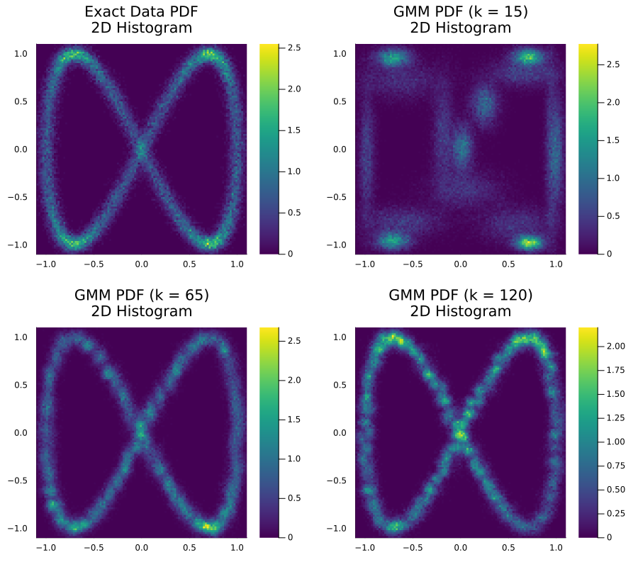

Gaussian Mixture Models
To demonstrate how to use this module, we will train Gaussian Mixture Models (GMMs) [5] to generate synthetic data that mirrors a two-dimensional target distribution. The GMMs must learn to mimic this distribution using only the provided training samples, without direct access to the true underlying distribution or the ability to sample additional data.
For this example we will need to load the following modules
using Lux
using GenerativeModelProtocolslet us consider the following function to generate our random two-dimensional data
function make_data(num_samples)
t = (2.0*π) .* rand(Float64,num_samples)
x_noise = 0.05 .* randn(Float64,num_samples)
y_noise = 0.05 .* randn(Float64,num_samples)
x = cos.(1.0.*t) .+ x_noise
y = sin.(2.0.*t) .+ y_noise
return x, y
end
num_samples = 5000
x_train, y_train = make_data(num_samples)
train_data = collect(transpose(hcat(x_train,y_train)))we then define the GMMs that are to be trained, with 15, 65 and 120 Gaussian clusters each, on this data
k = [15, 65, 120]
models = [GenerativeModelProtocols.GaussianMixtureModel(2, ki) for ki in k]thus, our trainable generative model protocols are defined, and trained, as
protocols = [
GenerativeModelProtocol(model, train_data;
batchsize = 256,
epochs = 1500,
optimiser = Adam(; eta = 1.0E-4, beta = (0.95,0.999)),
device = cpu_device()
)
for model in models
]
train!(protocol)finally, we can generate synthetic data by simply invoking our trained protocol
synthetic_data_1 = protocols[1](num_samples)
synthetic_data_2 = protocols[2](num_samples)
synthetic_data_3 = protocols[3](num_samples)
Displaying models and protocols
As part of this module, Base.display is overloaded with most relevant structures that users can need. We can easily read the configuration of protocol from the REPL by inputting
julia> protocols[1]
GenerativeModelProtocol{GenerativeModelProtocols.GaussianMixtureModel, Adam{Float64, Tuple{Float64, Float64}, Float64}}:
training_data = 2×5000 Matrix{Float64}
epochs = 1500
batchsize = 256
shuffle = true
optimiser = Adam(eta=0.0001, beta=(0.95, 0.999), epsilon=1.0e-8)
device = CPUDevice
model = GaussianMixtureModellikewise, we can also read the configuration of model from the REPL by inputting
julia> models[1]
GenerativeModelProtocols.GaussianMixtureModel:
μ = 15×2 Matrix{Float64}
log_σ² = 15×2 Matrix{Float64}
p = 15-element Vector{Float64}
predictor_network:
Chain(
Dense(2 => 32, relu)
Dense(32 => 32, relu)
Dense(32 => 32, relu)
Dense(32 => 32, relu)
Dense(32 => 32, relu)
Dense(32 => 15)
)Model Validation
Across all three trained architectures, the generated synthetic data generally preserves the geometric structure of the reference training set. However, artifacts such as incorrect distribution shape, or scattered out of trend datapoints, particularly in the GMM with 15 Gaussian components which yields the most significant distributional divergence.
To overcome these visual anomalies, evaluating the 2D probability density function (PDF) via a 2D histogram or kernel density estimate offers a more rigorous and reliable assessment of how accurately the underlying distributions were learned.

Source code
The scripts used to create and train the GMMs, and to produce all the plots shown in this page are included in the examples folder of this module.
cd /path/to/GenerativeModelProtocols.jl/examples/intro_example/gmm_example
julia intro_example.jl